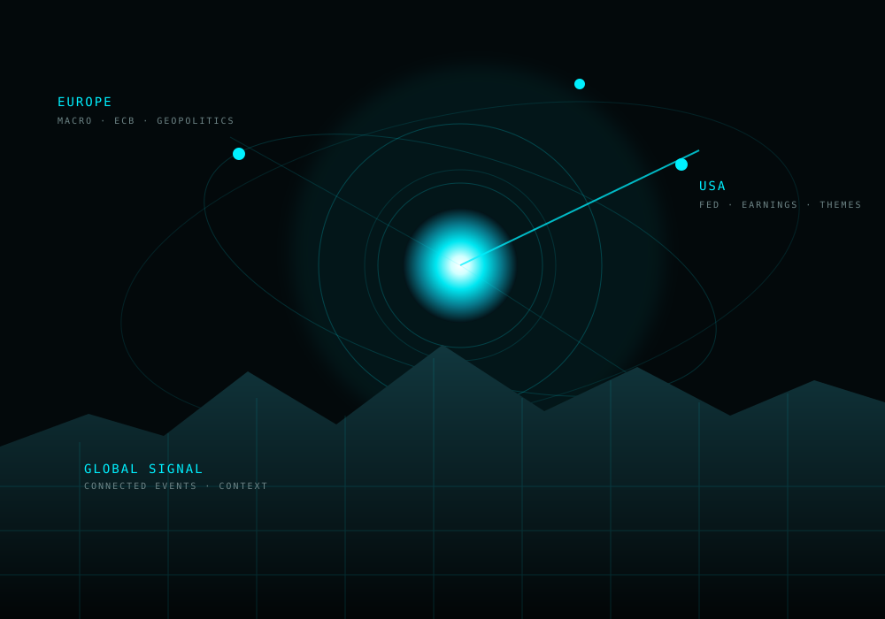

LOOK OUTSIDE · THE RADAR
☀️ AI Morning Briefing
Scan a selected region — EU, UK, CH or USA — and turn relevant information into a concise intelligence briefing before the trading day begins.
Meet your AI Coach.
It scans the world. It studies your trading. You ask the questions — and discover what matters.

One looks outward and turns market information into intelligence. The other looks inward and helps you discover patterns hidden in your own trading.
Scan a selected region — EU, UK, CH or USA — and turn relevant information into a concise intelligence briefing before the trading day begins.

Ask a question in plain language. The journal becomes evidence, and AI helps connect patterns in setups, timing, execution and behavior.
Markets never sleep. Instead of starting the morning with dozens of tabs, headlines and disconnected signals, the AI Morning Briefing is designed to turn the relevant information in your selected region into one focused intelligence report.
The journal contains the evidence. The AI helps you investigate it. Ask a question in plain language and let VoltDesk connect the dots across your recorded trades.
I found a recurring pattern in your journal. Your breakout losses are concentrated in later-session entries, while your earlier entries show a different outcome profile. The setup itself is not the only differentiator — entry timing and the way position size changes around losses also matter.
The value is not a prettier table. It is the path from a human question to evidence, analysis and an insight you can use. Depending on the task, VoltDesk can combine structured in-app analysis with AI reasoning.
Ask the question that matters to you.
Relevant market or journal evidence is assembled.
Structured logic and AI reasoning look for relationships.
You get an answer in context — not another data dump.
The market gives you information. Your journal gives you evidence. VoltDesk AI Coach helps you turn both into a clearer picture — so you can make the decision yourself.